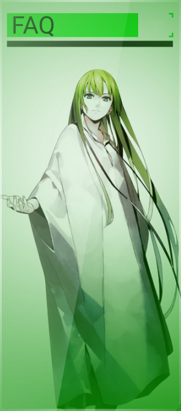
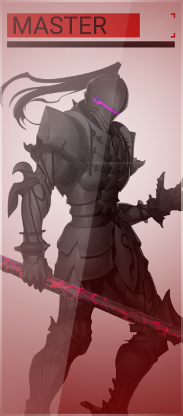
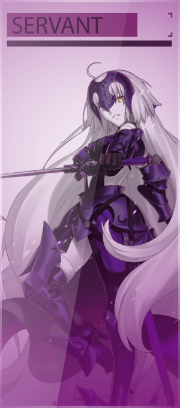
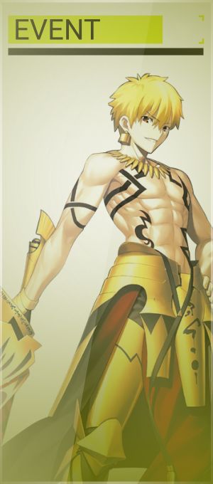
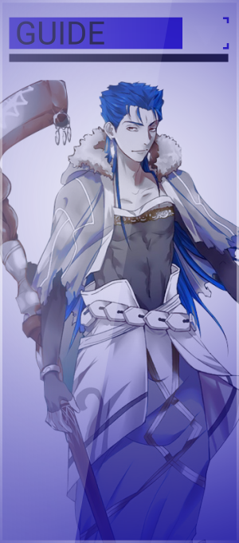

WIKI
HƯỚNG DẪN CÀI ĐẶT GAME
Bài viết mới
Event
Guide
Gallery
05/24/2017
9 Million Downloads Celebration!
05/23/2017
Hunting Quest 3 is here!
05/02/2017
Servant Strengthening Quest is here!
06/25/2017
Rerun: Celestial Demon Tales - Onigashima
12/03/2017
Rerun: Restless Drunk Demon's Capital - Rashoumon
01/04/2017
Fate/GUDAGUDA Meiji Ishin
    